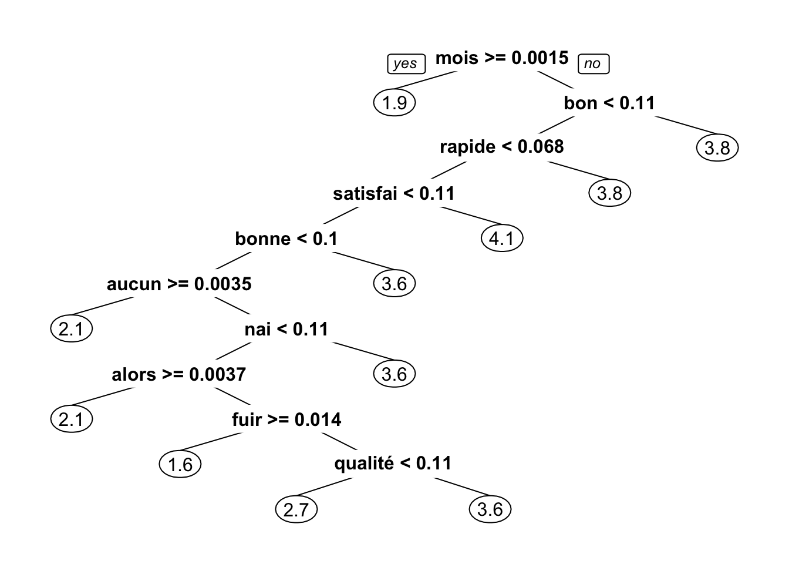
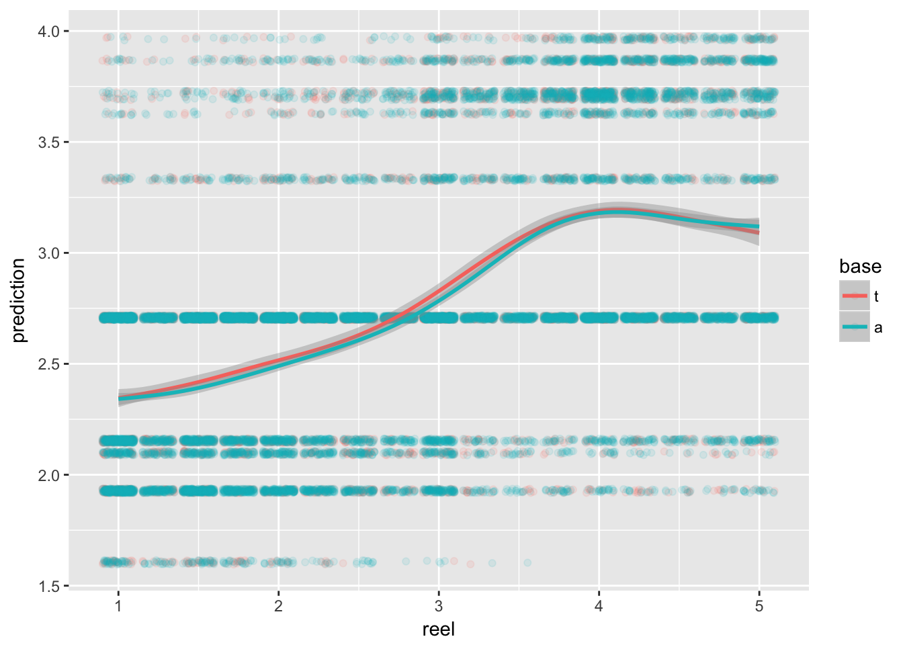
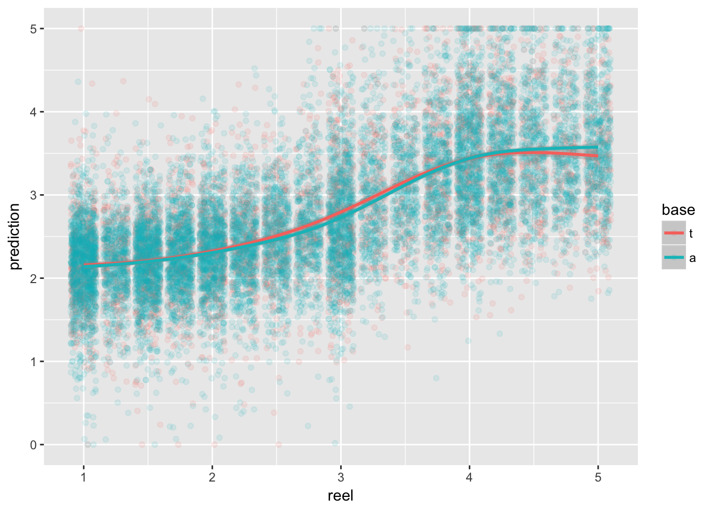

Les sites d’avis de consommateurs recueillent des messages précieux venant des clients et peuvent être utilisé pour mieux comprendre les besoins des clients. Les données ont été récupérées sur le site d’opinions assurance, et la base de données comprend les variables suivantes :
Différentes analyses sont réalisées sur ces données:
De façon générale, il est difficile de quantifier les commentaires textuels avec un indicateur unique. Une façon de faire est l’analyse de sentiments, qui traduit les sentiments positif ou négatifs (ou d’autres émotions plus complexes) reflétés par les mots. Lorsque les commentaires sont accompgnés des notes numériques, il est possible de prédire la note en fonction du texte.
Cette base pourrait servir de base d’apprentisssage pour d’autres commentaires qui ne seraient pas notés par les clients, par exemple, les commentaires sur Twitter ou encore les conversations téléphoniques. Ainsi, il est possible de construire un indicateur numérique (de 1 à 5) pour les données textes.
Pour ce faire, on peut transformer les textes en une matrice (Document-Term Matrix), puis modéliser la note en fonction des densités de certains mots. ou on peut aussi utiliser les tf-idf.
On peut utiliser un arbre de régression:

Et on obtient une erreur type (RMSE) de 0.88.

On peut également utiliser une régression linéaire généralisée:
## Estimate Std. Error t value Pr(>|t|)
## (Intercept) 2.4725124 0.03838308 64.416731 0.000000e+00
## accueil 0.6665533 0.19470343 3.423428 6.204318e-04
## agence 0.7130731 0.20755470 3.435591 5.932643e-04
## bien 1.1888951 0.21846798 5.441965 5.373153e-08
## bon 1.2285327 0.14851174 8.272294 1.452291e-16
## bons 1.1143310 0.21940951 5.078772 3.855840e-07
## bonus 0.7709684 0.20538946 3.753690 1.750723e-04
## cas 0.4421681 0.19803480 2.232780 2.558185e-02
## depuis 1.0647292 0.25566874 4.164487 3.142353e-05
## dossier -0.5614145 0.27274798 -2.058364 3.957679e-02
## matmut 0.8511876 0.20058663 4.243491 2.217226e-05
## nai 2.8432744 0.21424359 13.271223 6.495152e-40
## peu 0.9195290 0.18454073 4.982797 6.354533e-07
## peut 1.1929080 0.23586230 5.057646 4.307329e-07
## plus -0.4402855 0.23955351 -1.837942 6.609564e-02
## pris 0.7095356 0.33265142 2.132970 3.294740e-02
## remboursements 0.8430924 0.18052105 4.670327 3.039834e-06
## services 0.4186969 0.20123229 2.080665 3.748576e-02
## sinistre 0.4720055 0.21984281 2.147014 3.181217e-02
## sinistres 0.6452239 0.19893530 3.243385 1.184413e-03
## tarifs 1.1657006 0.17300163 6.738091 1.678195e-11
## toujours 1.7572147 0.20444471 8.595061 9.348395e-18
## très 1.7734261 0.15199550 11.667623 2.752343e-31
## être -0.8023510 0.31512535 -2.546133 1.090476e-02
## attention -1.1124689 0.29970987 -3.711819 2.067056e-04
## clients -0.9258558 0.20180053 -4.587975 4.521017e-06
## demande -0.5126626 0.28297010 -1.811720 7.005444e-02
## expert -1.0537947 0.33493381 -3.146277 1.657674e-03
## impossible -1.3701515 0.27760531 -4.935610 8.097412e-07
## internet 1.0103054 0.24529123 4.118800 3.834048e-05
## non -0.6525105 0.27566023 -2.367082 1.794472e-02
## changer 0.4654124 0.25278673 1.841126 6.562770e-02
## chez -0.5236429 0.24759324 -2.114932 3.445627e-02
## contrat -0.7027452 0.23141406 -3.036744 2.396621e-03
## jamais -0.8849400 0.21389113 -4.137338 3.537547e-05
## panne 0.6677963 0.25479790 2.620886 8.781205e-03
## prix 1.5256218 0.20071755 7.600839 3.160872e-14
## seul 0.8778481 0.24885882 3.527495 4.210799e-04
## après -0.8523357 0.26853613 -3.174008 1.507294e-03
## contact 0.8925032 0.20489664 4.355870 1.336396e-05
## euros -0.9583836 0.19724030 -4.858965 1.194934e-06
## jai 1.3829945 0.24890300 5.556359 2.813318e-08
## rien -0.9759978 0.23271774 -4.193912 2.761536e-05
## ailleurs -1.1272327 0.28987603 -3.888671 1.013378e-04
## dit -1.9067126 0.36177909 -5.270378 1.385037e-07
## encore -0.5226697 0.27564507 -1.896169 5.796169e-02
## mauvais -2.1143142 0.24529440 -8.619497 7.564151e-18
## aucun -1.6759196 0.22043659 -7.602729 3.115267e-14
## aucune -1.6555158 0.23727750 -6.977129 3.171147e-12
## conseillers 0.7364254 0.18255609 4.033968 5.518258e-05
## courrier -1.2512476 0.34514447 -3.625287 2.898360e-04
## dune 0.5744780 0.28413271 2.021865 4.321244e-02
## malgré -1.0207987 0.27433612 -3.720978 1.993585e-04
## moins 1.7086035 0.21839128 7.823588 5.563206e-15
## nest -0.6583495 0.25356998 -2.596323 9.434238e-03
## payé -0.9946116 0.39714453 -2.504407 1.227884e-02
## personne -1.5873873 0.27458656 -5.781009 7.610339e-09
## quil -0.6068497 0.31377436 -1.934032 5.313267e-02
## rembourser -1.7256832 0.31806800 -5.425517 5.890933e-08
## responsable -1.1652896 0.27890469 -4.178092 2.960457e-05
## réponse -0.4856018 0.28475713 -1.705319 8.816079e-02
## savoir -0.9105577 0.38950139 -2.337752 1.941646e-02
## sous -1.2238113 0.38717948 -3.160837 1.577076e-03
## rapport 1.1016446 0.17712698 6.219519 5.152589e-10
## satisfait 1.0857591 0.12223934 8.882239 7.480240e-19
## tarif 0.7533303 0.18606024 4.048851 5.179297e-05
## avoir -0.5119964 0.25062552 -2.042874 4.108670e-02
## cotisations -0.5178082 0.29035494 -1.783363 7.455256e-02
## mal -1.1475093 0.27431597 -4.183166 2.895217e-05
## mois -2.0447341 0.25957291 -7.877302 3.632992e-15
## moment 0.6389012 0.26561130 2.405399 1.616985e-02
## vie 0.7244557 0.30134599 2.404066 1.622891e-02
## année -0.4244406 0.22645831 -1.874255 6.091955e-02
## mauvaise -1.9095465 0.25355083 -7.531217 5.386892e-14
## deux -0.5532826 0.26847998 -2.060796 3.934398e-02
## donc -0.4473565 0.24805435 -1.803462 7.134083e-02
## niveau 0.9055703 0.16910700 5.355014 8.712836e-08
## rapide 2.0301421 0.16865113 12.037524 3.503145e-33
## soucis 0.8446685 0.22859077 3.695112 2.207674e-04
## vol -0.7448083 0.26284875 -2.833600 4.610369e-03
## besoin 0.5283698 0.27781069 1.901906 5.720739e-02
## bref -1.1166928 0.42211474 -2.645472 8.168336e-03
## chaque 0.8238322 0.26367443 3.124429 1.785747e-03
## faire -0.7356187 0.25527567 -2.881664 3.962827e-03
## fois -0.7155070 0.27966740 -2.558421 1.052703e-02
## lagence 0.4575542 0.25577933 1.788863 7.366208e-02
## maintenant -0.6822348 0.34387972 -1.983934 4.728591e-02
## nont -1.2666597 0.37723105 -3.357782 7.881486e-04
## payer -1.5512622 0.27789541 -5.582180 2.426786e-08
## surtout -0.6646888 0.23248360 -2.859078 4.256063e-03
## trop -0.5442085 0.16701779 -3.258386 1.123595e-03
## absolument -1.3623694 0.36881912 -3.693869 2.218488e-04
## garanties 0.5400890 0.19251936 2.805375 5.033899e-03
## prise 0.9049760 0.35307349 2.563138 1.038517e-02
## quoi -1.5141479 0.41257153 -3.670025 2.435779e-04
## recommande 0.8984356 0.22125111 4.060706 4.923541e-05
## résilier -1.7370233 0.32838209 -5.289641 1.247123e-07
## vais -0.9676278 0.28409410 -3.406011 6.613554e-04
## augmentation -0.4809861 0.20758718 -2.317032 2.051876e-02
## permis 0.9068930 0.33648980 2.695158 7.045337e-03
## premier -1.2037419 0.39304297 -3.062622 2.198931e-03
## éviter -2.1291088 0.29735889 -7.160064 8.534509e-13
## mieux 0.7660075 0.22671438 3.378734 7.305227e-04
## peux 0.7044810 0.25809956 2.729493 6.352422e-03
## assurances 0.6024450 0.20556415 2.930691 3.388468e-03
## qualité 1.1778296 0.16567045 7.109473 1.230934e-12
## toute 1.0337174 0.30829285 3.353037 8.017720e-04
## fuir -2.7843750 0.28507431 -9.767190 1.887751e-22
## trouvé 0.7372217 0.26819303 2.748847 5.989466e-03
## auto 0.5287504 0.21109884 2.504753 1.226685e-02
## paye -0.5478700 0.27012990 -2.028172 4.256470e-02
## quand -1.1482548 0.24349879 -4.715649 2.436557e-06
## probleme 1.3860237 0.19296999 7.182587 7.244731e-13
## efficace 1.2527090 0.20482682 6.115942 9.897362e-10
## bonne 1.7771357 0.15772709 11.267156 2.674668e-29
## quon -2.0144891 0.37074975 -5.433555 5.632131e-08
## conseiller 0.3791555 0.21333201 1.777302 7.554381e-02
## tres 1.4324557 0.12330339 11.617327 4.931728e-31
## trés 0.8425218 0.14098055 5.976157 2.349490e-09
## aussi 1.2335368 0.25338769 4.868180 1.140656e-06
## cause -1.0795918 0.35786615 -3.016748 2.560378e-03
## entre -0.8608233 0.32995285 -2.608928 9.093897e-03
## dommage 0.8749601 0.23919746 3.657899 2.553802e-04
## rapidement 1.5396023 0.23546885 6.538454 6.467849e-11
## assureur 0.9353526 0.19144592 4.885727 1.043788e-06
## disant -2.2099539 0.47360812 -4.666208 3.101276e-06
## lettre -1.1682732 0.42775305 -2.731186 6.319902e-03
## prendre -1.0522964 0.30427769 -3.458342 5.453967e-04
## quils -0.9475625 0.33187808 -2.855152 4.308995e-03
## point 1.0000475 0.28041570 3.566303 3.634614e-04
## avis 0.9265043 0.27142377 3.413497 6.434679e-04
## disponibilité 0.8386266 0.18744276 4.474041 7.746118e-06
## merci 0.9554753 0.26052084 3.667558 2.459366e-04
## problème 1.6476030 0.21679243 7.599910 3.183529e-14
## rapidité 2.4839068 0.21085067 11.780407 7.376842e-32
## alors -2.0720603 0.30350856 -6.827024 9.087173e-12
## franchise 0.7779876 0.20048105 3.880604 1.047547e-04
## habitation 0.7170619 0.23672839 3.029049 2.458467e-03
## lexpert -0.9839286 0.36414789 -2.702003 6.902010e-03
## quelques 1.0200085 0.31723728 3.215286 1.306598e-03
## toutes 1.2079095 0.27230385 4.435888 9.250966e-06
## dautres 0.5065416 0.25690838 1.971682 4.866889e-02
## dire 1.1792140 0.24581207 4.797218 1.628210e-06
## font -0.6143070 0.25701091 -2.390198 1.685462e-02
## petit 0.4775705 0.28339879 1.685154 9.198492e-02
## plusieurs 0.9328387 0.25356565 3.678884 2.352812e-04
## raison -0.9679256 0.31846131 -3.039382 2.375746e-03
## franchises 0.7136410 0.20698608 3.447773 5.671682e-04
## résilié -1.4959236 0.34408683 -4.347518 1.388218e-05
## reste 0.4283339 0.22168549 1.932169 5.336214e-02
## cher -0.7798315 0.19488407 -4.001515 6.331637e-05
## résiliation -1.7049079 0.30484644 -5.592678 2.284838e-08
## maif 0.7238667 0.22088348 3.277143 1.051613e-03
## véhicules 0.8528712 0.31052645 2.746533 6.031858e-03
## problèmes 0.5504983 0.25601837 2.150230 3.155697e-02
## pourtant -0.9748811 0.38845265 -2.509652 1.209807e-02
## chose -0.7861086 0.35447801 -2.217651 2.659728e-02
## gmf 0.7221734 0.20862756 3.461544 5.389570e-04
## lécoute 1.7828903 0.20923004 8.521197 1.766996e-17
## chère -0.4751191 0.23295859 -2.039500 4.142199e-02
## voitures 0.8626515 0.26424514 3.264588 1.099305e-03
## nouveau 0.8682574 0.31669234 2.741643 6.122326e-03
## disponible 0.9893960 0.20714665 4.776307 1.806567e-06
## malus -1.1430905 0.31377454 -3.643031 2.705819e-04
## aujourdhui -0.9010779 0.38452924 -2.343327 1.912884e-02
## relevé -1.4830521 0.38148708 -3.887555 1.018042e-04
## augmente -0.7691845 0.27043520 -2.844247 4.459185e-03
## macif 0.6852439 0.18183498 3.768494 1.650222e-04On obtient une erreur type de 0.78

Pour avoir un meilleur modèle, plusieurs pistes d’amélioration sont possibles:
Copyright © 2016 Blog de Kezhan Shi